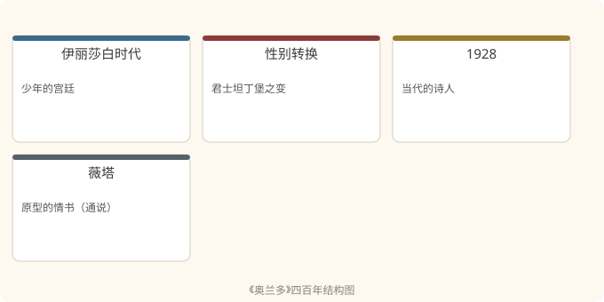

奥兰多
一、基本信息
| 作者 | 伍尔夫 |
|---|---|
| 成书/出版 | 1928年（作者页 B128 口径：奥兰多（1928）） Virginia Woolf — Encyclopaedia Britannica（百科全书） |
| 国别/地区 | 英国 |
| 时代 | 现当代 · 20世纪 |
| 体裁 | 长篇小说 |
| 语言 | 英语 |

《奥兰多》四百年结构图（主题·结构图）
二、创作背景
作者页（B128）：伍尔夫 major_works 载'奥兰多（1928）、海浪（1931）、一间自己的房间（1929）'（B128 作者页定位，详见 daluolaiwei 条核对）。
题材（通说待核）：奥兰多跨越四百年与性别转换——'传记'形式的幻想。
三、内容脉络
伊丽莎白时代少年→性别转换→20世纪诗人——四百年的不老（通说待核）。
四、主要人物表
| 人物 | 身份 | 说明 |
|---|---|---|
| 奥兰多 | 贵族 | 跨越性别与世纪（通说待核） |
| 薇塔? | 原型 | 薇塔·萨克维尔-韦斯特（通说待核） |
五、主题与艺术特点
- 性别的流动（通说）。
- '传记'的反讽（书副题——通说待核）。
- 献给薇塔的情书（通说待核）。
六、影响与评论
- 作者页：伍尔夫代表作谱系（B128 作者页口径）。
Virginia Woolf — Encyclopaedia Britannica（百科全书） - 女性主义与酷儿理论经典（通说待核）。
Virginia Woolf — Encyclopaedia Britannica（百科全书）
七、阅读建议
难点
- 四百年跨度。
- '传记'体的反讽。
- 《奥兰多》（上海译文出版社，通说待核）。
- 英文原版（公有领域渐近）。
先《一间自己的房间》后本作。
八、待核实
- 1928年出版（Hogarth Press说）核对。
- 奥兰多人名与原型（薇塔）待核。
- 性别转换章节细节待核。